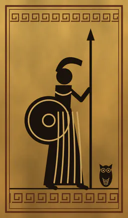

Sala I · Sistemas
Atenea
JOSEMI-OS

Mi primer proyecto personal es un escritorio que puedes abrir y tocar, con terminal, ventanas, fondos ASCII y un Arcade.
Ficha del proyecto
Hecho con HTML, CSS y JavaScript. Incluye comandos, seis fondos animados, siete temas y búsqueda de aplicaciones con Ctrl+K. Sigue en desarrollo.